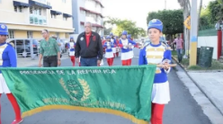

Tradiciones
--------------------
Aguinaldos:
Los aguinaldos son villancicos navideños que se cantan de casa en casa, acompañados por la música de tambora, güira y acordeón.
Fuegos Artificiales:
Los fuegos artificiales son una parte integral de las celebraciones navideñas en República Dominicana.

Pasar Tiempo con la Familia
La Navidad en República Dominicana es una oportunidad para reunirse con la familia y amigos, compartir comida y bebida, y disfrutar de la compañía mutua.

Cena de los Reyes Magos:
La cena de los Reyes Magos se celebra el 6 de enero y es una oportunidad para reunirse con la familia y amigos para disfrutar de una comida especial y compartir regalos.